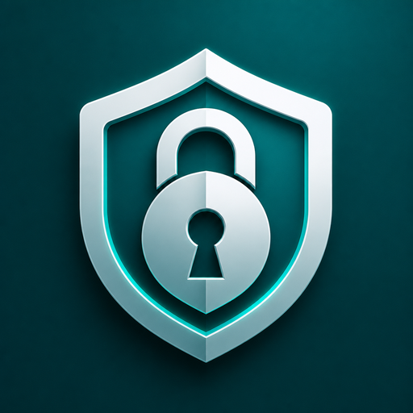

Coffre
Gestionnaire de mots de passe local
Un fichier à télécharger, un double-clic pour installer. Pas de compte, pas de cloud : le coffre reste chiffré sur votre appareil.
Télécharger pour Windows
Coffre-Setup-Windows.exe — installe Coffre + le programme de suppression totale
Télécharger pour Android
Coffre.apk — ouvrez le fichier sur le téléphone
Mettre à jour
La première version ne se met pas à jour toute seule. Téléchargez Windows ou Android ci-dessus et installez par-dessus (ne désinstallez pas : le coffre serait perdu). À partir de la 1.0.1, Coffre propose ensuite les mises à jour à l'ouverture.
Windows
- Double-cliquez l'installateur, puis « Installer ».
- Coffre apparaît dans le menu Démarrer et sur le Bureau.
- Aucun mode développeur n'est requis pour l'installateur.
- Tout supprimer : menu Démarrer → « Coffre — Tout supprimer ». Ferme Coffre, le désinstalle et détruit le coffre local (irréversible).
Android
- Copiez l'APK sur le téléphone et ouvrez-le.
- Autorisez l'installation depuis cette source si Android le demande.
- Dans Coffre : Paramètres → Activer le remplissage automatique.
- Pour tout effacer : Paramètres Android → Applications → Coffre → Désinstaller (le coffre est détruit avec l'app).
Code source
Le projet est public : github.com/galaxie44/coffre. Les mises à jour se trouvent dans Releases.
100 % local · Argon2id + AES-256-GCM · pas de télémétrie